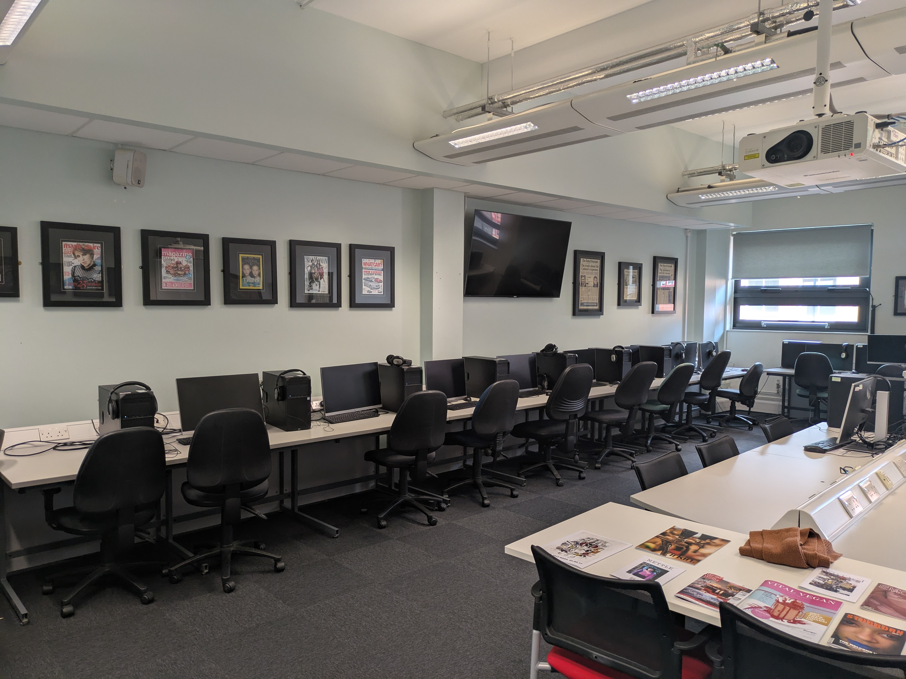

Explore Cantor College
World-Class Facilities for Your Success
At Cantor College, we are committed to providing students with an outstanding environment to learn, create, and innovate. Our state-of-the-art facilities are designed to support your academic journey and help you thrive in your chosen field.
Whether you are studying computing, design, or technology, our campus offers everything you need to succeed.
Our Facilities
Advanced Computing Labs
Our computing labs are equipped with the latest hardware and software, supporting programming, cybersecurity, and data science. The labs are accessible 24/7 for flexible study.
Design Studios
Creative spaces equipped with professional tools, including graphic tablets and large-format printers, allowing students to develop and showcase their ideas.
Innovation & Makerspace
A hub for creativity featuring 3D printers, laser cutters, and advanced prototyping tools to bring ideas to life.
Technology Sandbox
An experimental space where students explore emerging technologies such as VR, AR, and AI.
Learning & Student Support
- Collaborative learning spaces with smartboards and flexible layouts
- Library and Resource Centre with books, journals, and digital access
- Quiet study areas and computer workstations
- Career and Development Centre with job support and networking events
Student Life
The Student Hub provides a social space for relaxation and connection, featuring a café, lounge areas, and student activities.
Our Fitness and Wellness Centre includes a gym, exercise classes, and wellbeing services such as yoga and counselling.
On-campus accommodation offers modern living spaces with study areas and high-speed internet, creating a supportive student community.

Experience Cantor College
Our facilities are designed to enhance your learning experience and support both academic and personal growth. We invite you to explore our campus and make the most of everything we have to offer.